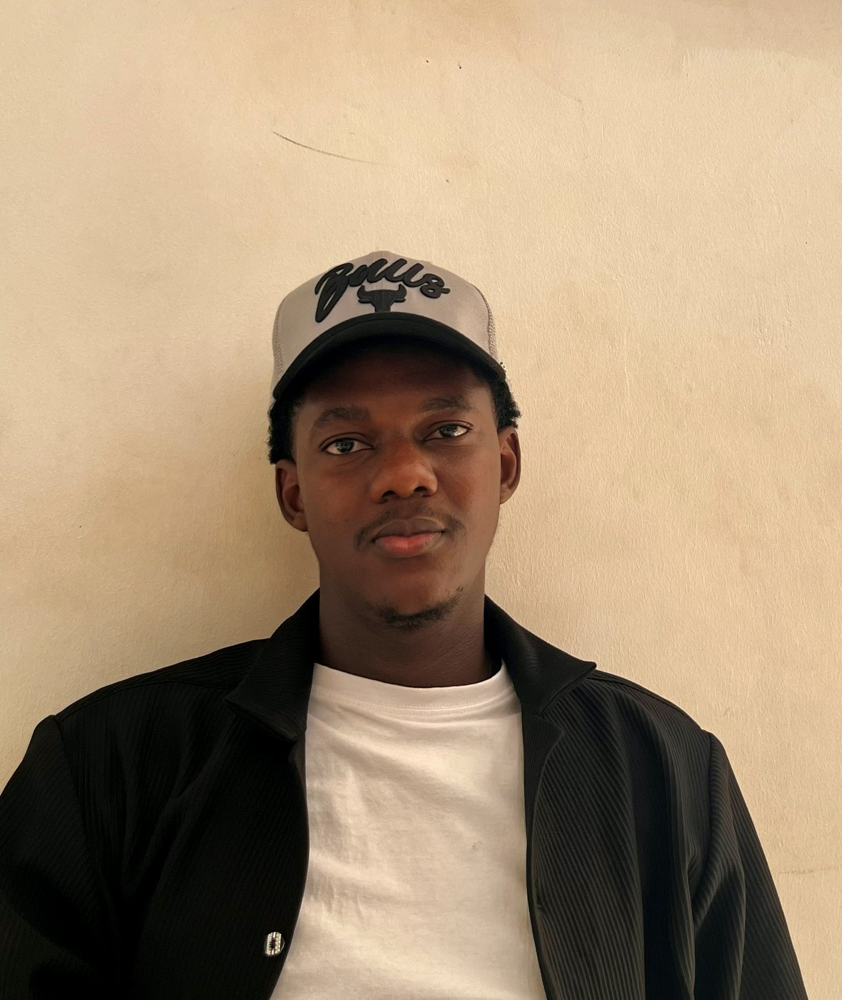

Hey! I'm Chibuike. I'm a data scientist and AI engineer based in Port Harcourt, Nigeria. Day to day, I'm a Customer Success Manager at Thera (YC S22), where I handle technical operations: I built our AI support assistant and automate the workflows that keep customers and the product team in sync.
Outside work, I build things with NLP, LLMs, and machine learning, mostly with healthcare data and messy text. You can browse my projects, read my writing, see where I've worked (or grab my resume), or find me on LinkedIn, GitHub, and Twitter.
Want to build something together? Say hi! Email me or book a call.